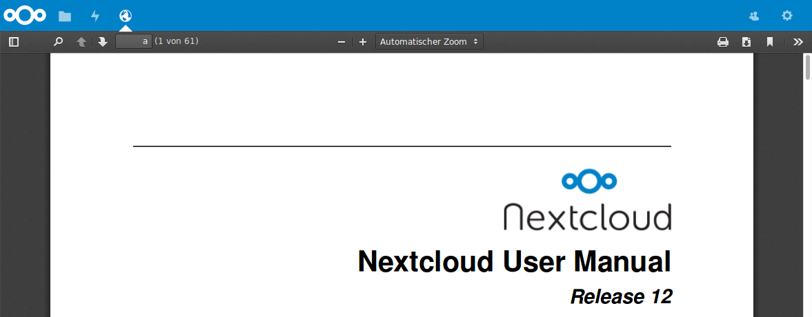
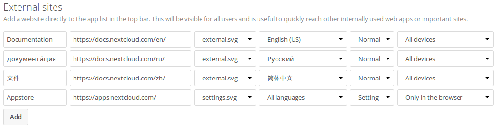

Linking External Sites¶
You can embed external websites or documents inside your Nextcloud pages with the External sites app, as this screenshot shows.

Click to enlarge
This is useful for quick access to important pages such as the Nextcloud manuals and informational pages for your company, and for presenting external pages inside your custom Nextcloud branding, if you use your own custom themes.
The External sites app is included in all versions of Nextcloud. Go to Settings > Apps > Disabled apps to enable it. Then go to your Nextcloud Settings > Admin > Additional settings to create your links, which are saved automatically.
Each link can have a unique icon, icons are currently loaded from apps/external/img/.
If you select a language, the link will only be displayed for users with the selected language.
This allows you to have different documentation links for users depending on their language.
It is also possible to add links for a special device (recognized by the user agent). Currently the following options are available: All devices, Android app, iOS app, Desktop client and all others (Browsers).
Hover your cursor over a row to make the trashcan icon appear when you want to remove them.

Click to enlarge
The links appear in the Nextcloud menu on the top or in the settings menu, after reloading the page.

Configurations preventing embedding¶
Your links may or may not work correctly due to the various ways that Web browsers and Web sites handle HTTP and HTTPS URLs, and because the External Sites app embeds external links in IFrames. Modern Web browsers try very hard to protect Web surfers from dangerous links, and safety apps like Privacy Badger and ad-blockers may block embedded pages. It is strongly recommended to enforce HTTPS on your Nextcloud server; do not weaken this, or any of your security tools, just to make embedded Web pages work. After all, you can freely access them outside of Nextcloud.
Most Web sites that offer login functionalities use the X-Frame-Options or
Content-Security-Policy HTTP header which instructs browsers to not
allow their pages to be embedded for security reasons (e.g. “Clickjacking”). You
can usually verify the reason why embedding the website is not possible by using
your browser’s console tool. For example, this page has an invalid SSL
certificate.

On this page, X-Frame-Options prevents the embedding.

There isn’t much you can do about these issues, but if you’re curious you can see what is happening.


{kind=link}
{kind=link}